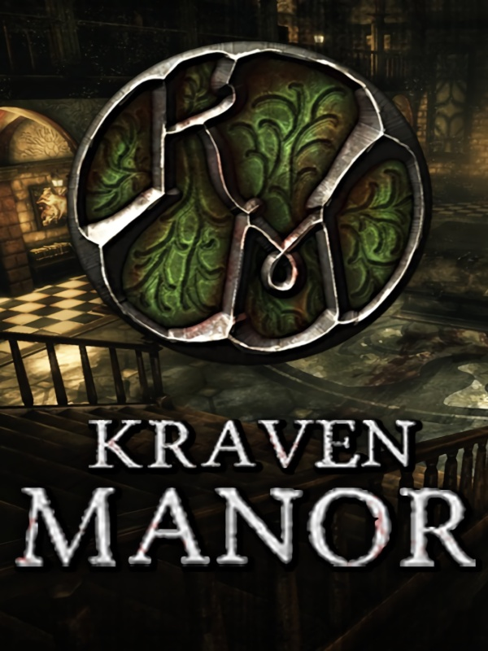

Kraven Manor
Kraven Manor
Details
|  | |
| Playtime | Not Played |
| Last Activity | Never |
| Added | 19/04/2020 |
| Modified | Never |
| Completion Status | Not Played |
| Source | Steam |
| Platform | PC |
| Release Date | 26/09/2014 |
| Community Score | 70 |
| Critic Score | 58 |
| User Score | |
| Genre |
Action Adventure Free to Play Indie |
| Developer |
Demon Wagon Studios |
| Publisher |
Demon Wagon Studios |
| Feature |
Achievements Captions Available Cloud saves Single Player |
| Links |
PCGamingWiki Community Hub Discussions Guides Achievements Store Page News |
Description
Just Updated
Kraven Manor is now free to play forever! Enjoy!
About the Game

Turn out the lights, take a deep breath, and prepare yourself. Explore the depths of the immersive, atmospheric world of Kraven Manor. Uncover its secrets, solve its mystical puzzles, and face the growing threat within.
Kraven Manor challenges you to explore an expansive manor and discover the mysteries that lurk in its dark corners. You have the power to dynamically alter the layout of your environment by interacting with a miniature scale model of the manor, located in its extravagant entryway.
Dynamically build the manor around you. Find miniature room models and carry them back to an increasingly elaborate scale model of the manor. Adjusting the model causes rooms to move and appear in real space, awaiting your arrival.
Each new room exposes revelations into the troubling past of William Kraven. Face your fears and see if you have what it takes...the doors of Kraven Manor await you.

Features
-
Experience a hauntingly beautiful first person atmosphere
-
Hear chilling symphonies and bumps in the night that will have you
looking over your shoulder
-
Become the architect of Kraven Manor by constructing a scale model
of the house
-
Prepare for tension, puzzles, and a mounting threat that avoids
the cheap scare
-
Beware a unique antagonist that pursues you relentlessly to the
final moments
-
Find collectible secrets hidden within the Manor and obtain a very
special ending
-
Play Nightmare Mode for a scarier challenge and a battery for your
flashlight
-
Enjoy robust graphical settings and custom key binding options
- Face your fears in 14 Languages